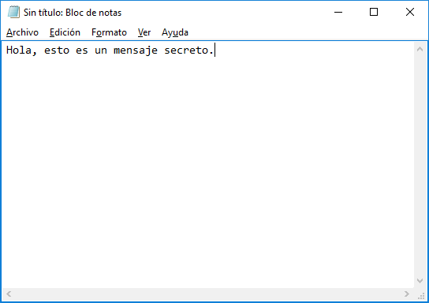
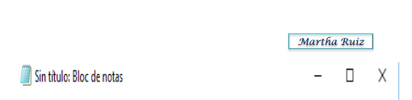
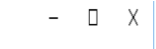
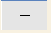
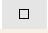
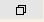
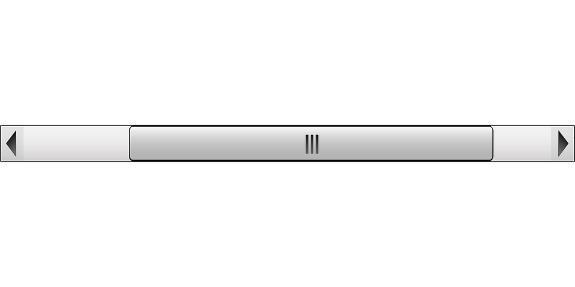

El sistema operativo Windows 10, al igual que sus versiones anteriores, basa su interfaz en el uso de ventanas. Es decir, cada aplicación se abre en un recuadro llamado ventana, lo que nos permite tener varias aplicaciones funcionando a la vez e ir cambiando de una a otra, mostrando u ocultando sus ventanas.
La mayor parte de las ventanas de Windows siguen la misma estructura y son similares a la que puedes ver en esta imagen.

Esta ventana corresponde al Bloc de Notas de Windows y, en este caso concreto, podemos abrirlo usando la caja de búsquedas que está junto al botón inicio escribiendo bloc de notas. El panel de resultados mostrará la aplicación correspondiente del mismo modo en que lo hicimos con el teclado en pantalla. También puedes pulsar Inicio > Todas las aplicaciones > Accesorios de Windows > Bloc de notas. Puedes ver algunos tipos más de ventana en este básico. Tipos de ventanas
Vamos a describir los conceptos básicos de las ventanas:
- La barra de título está situada en la parte superior de la ventana. Indica el nombre del programa o documento.

- Los botones de tamaños permiten variar el tamaño de las ventanas. Están situados en la esquina superior derecha y permiten minimizar, maximizar-restaurar y cerrar.

- El botón minimizar  convierte la ventana en un botón situado en la barra de tareas de Windows 10, escondiendo la ventana y mostrando lo que haya tras ella.
- El botón maximizar  amplia el tamaño de la ventana a todo el área de trabajo, sin dejar de mostrar la barra de tareas.
- El botón restaurar  da a la ventana un tamaño menor al de pantalla completa, para permitirnos ajustar el tamaño y la posición que consideremos oportuno. Por defecto adopta el tamaño y posición de la última vez que fue restaurada. Sólo se muestra cuando la ventana está maximizada, sustituyendo al botón maximizar.
- El botón de cerrar se encarga de cerrar la ventana. En el caso de haber realizado cambios en algún documento te preguntará si deseas guardar los cambios antes de cerrar.
Si quieres conocer distintas formas de cerrar una ventana visita este avanzado. Cerrar ventanas
También tienes disponible un avanzado para conocer diferentes formas de organizar las ventanas en el escritorio. Organizar ventanas
- Las barras de desplazamiento permiten movernos a lo largo y ancho de la hoja de forma rápida y sencilla. Hay barras para desplazar horizontal y verticalmente. La barra sólo se activará, es decir, podremos utilizarla, cuando haya contenido que no cabe en la ventana. Además, el tamaño de la barra dependerá de cuánto contenido existe fuera de nuestra área de visualización: Si la barra es muy pequeña, es porque hay mucho contenido no visible, si es grande todo lo contrario. Podemos desplazarnos de distintas formas: Arrastrando la barra con el ratón, haciendo clic en las flechas que hay a los extremos o, en el caso de la barra vertical, también podremos moviendo la rueda central del ratón hacia arriba o hacia abajo, si el nuestro dispone de una.

- Redimensionar una ventana. Podemos personalizar el tamaño de una ventana colocando el cursor en el borde de la ventana. Cuando apreciemos que su forma cambia a una flecha bidireccional botón cerrar, estamos bien situados. Haciendo clic y arrastrando podremos darle forma. En los bordes derecho e izquierdo cambiaremos el ancho. En los bordes superior e inferior cambiaremos la altura botón cerrar y en el caso de querer cambiar ambos, podemos posicionar el ratón en cualquiera de las esquinas de la ventana botón cerrar. Esto es posible siempre que la ventana no esté en estado maximizado. En caso de que esté maximizada, es decir, ocupe toda la pantalla, puedes hacer un doble clic sobre la barra superior de la ventana y se restaura, permitiéndole ajustar el tamaño.
Ahora que entendemos mejor en qué consiste el sistema operativo, en el siguiente tema vamos a conocer cómo estos elementos se integran para conformar la moderna interfaz de Windows 10.